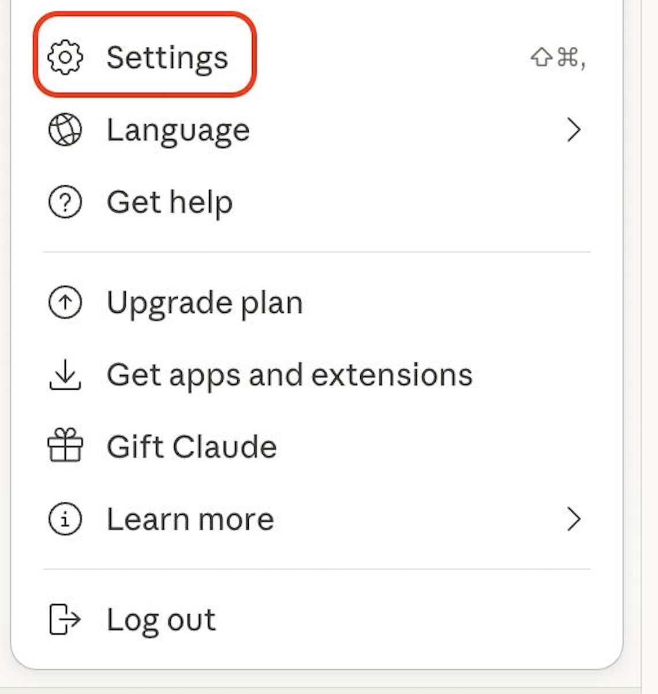
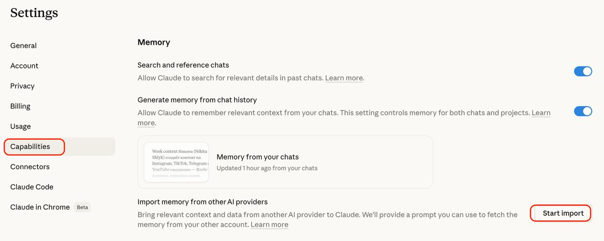
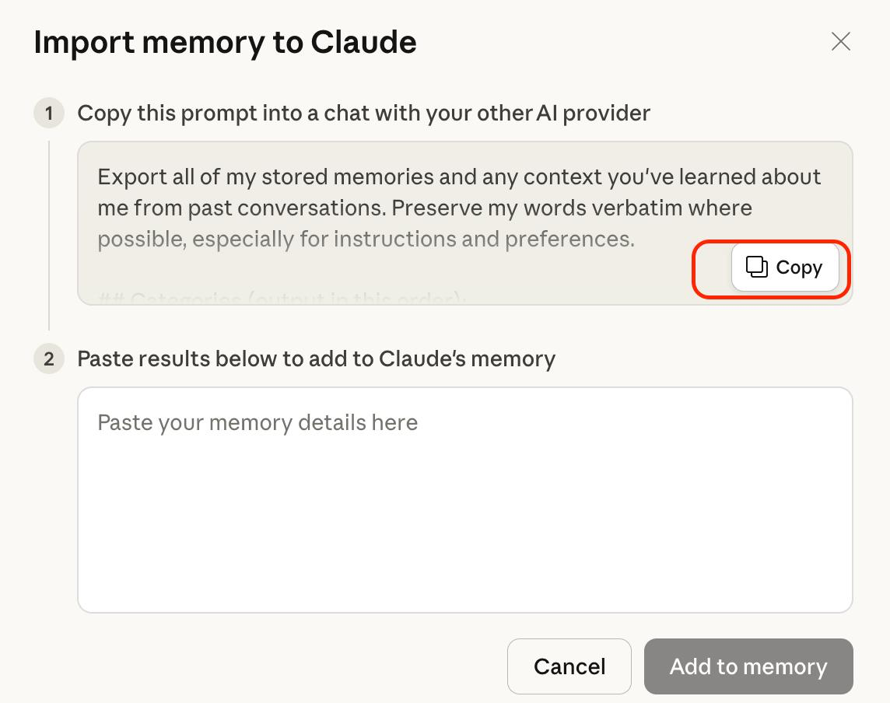
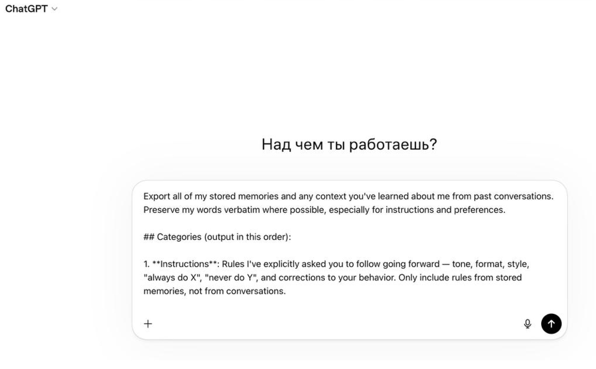

Нейросеть — это программа, которую обучили на огромном массиве текстов, картинок, кода. Она не "думает" — она предсказывает, какой ответ ожидается на ваш запрос.
Представьте помощника, который прочитал миллиарды страниц и теперь может ответить, сформулировать, разобрать задачу, написать код. Быстрый, но буквальный — что попросили, то и сделает.
AI не читает мысли. AI следует буквально. Качество результата = качество вашего запроса. Всё.
Когда говорят "Claude" - обычно имеют в виду чат в браузере. Но Claude это не один продукт, а целая экосистема. Одна подписка - доступ ко всем. Это важно понять с самого начала, иначе будешь сравнивать яблоки с грушами.
Что из этого нужно тебе
Это не лестница "от простого к сложному". Это разные инструменты под разные задачи.
- Общаться, получать ответы, писать тексты, анализировать - Claude AI в браузере
- Чтобы AI сам делал файлы, запускал код, собирал сайты и автоматизации - Claude Code
- Много работаешь с документами локально на Mac или Windows - Claude Desktop
- Нужен AI в кармане, пока едешь в метро - Claude Mobile
Pro за $20/мес или Max за $100-200 открывает доступ ко всем четырём сразу. Не нужно платить отдельно. Залогинился в claude.ai - автоматически есть доступ в Desktop, Code и Mobile через тот же аккаунт.
На чём сфокусируемся в этой базе
Блок 1 - про Claude AI в браузере. Это то с чего ты реально начнёшь. Научишься промптить, работать с Projects, подключать коннекторы.
Блок 2 - про Claude Code. Когда освоил AI в браузере и хочется чтобы он не отвечал а делал - переходишь сюда. Проекты, CLAUDE.md, реальная разработка своих штук.
Оба — нейросети. Оба отвечают на вопросы и пишут тексты. Разница проявляется на сложных задачах.
| ChatGPT | Claude | |
|---|---|---|
| Разработчик | OpenAI | Anthropic |
| Сильная сторона | Быстрые ответы, широкий охват, маркетплейс готовых агентов | Глубокий анализ, длинные тексты, аккуратный код, работа с большим контекстом |
| Маркетплейс | GPT Store — тысячи готовых агентов | Нет маркетплейса. Свой агент = свой Project |
| Код | Хорош для быстрых скриптов | Для больших проектов — отдельный продукт Claude Code |
| Образ | Универсальный помощник | Вдумчивый эксперт |
На практике полезно использовать оба. ChatGPT — для быстрого мозгового штурма, Claude — когда задача сложная или кода много.
Я долго сидел на ChatGPT и мне казалось что Claude - это тот же чат, только от другой компании. Это не так. У них разная философия работы. Пока её не поймёшь - будешь недоиспользовать Claude как минимум на 80%.
ChatGPT - это чаты
Открыл, задал вопрос, получил ответ. Закрыл - забыл. Память есть, но она общая на весь аккаунт. Контекст своего проекта ты держишь в голове: "а, мы же делали лендинг для психолога" - и каждый новый чат начинаешь с объяснений.
Claude - это проекты
Любая серьёзная задача в Claude - это отдельный Project со своим контекстом, файлами и инструкциями. Project "Мой бренд", Project "Клиент Иван", Project "Лендинг для психолога". Зашёл в нужный - Claude уже знает кто ты, над чем вы работаете, какие правила. Объяснять с нуля не нужно.
| ChatGPT | Claude | |
|---|---|---|
| Как мыслить о работе | Каждый разговор - новый запуск | Каждая задача - отдельный проект |
| Где хранится контекст | В твоей голове или в настройках аккаунта | Внутри Project - для всех чатов этого проекта |
| Файлы и инструкции | Загружаешь в каждый чат заново | Один раз в Project - работает везде внутри |
| Переключение между темами | Вкладки в истории чатов | Разные Projects в меню слева |
Перестаёшь думать "сейчас задам вопрос AI". Начинаешь думать "работаю внутри проекта X - Claude уже в курсе". Это другая модель работы. И с неё вся польза от Claude начинается.
В Claude Code та же философия, только проект там - это физическая папка у тебя на компьютере. Про это подробнее в блоке 2.
Если ты из России - Claude в лоб не откроется. Нужно три вещи: VPN, иностранный номер для регистрации, и выбрать подходящий тариф. Займёт минут 15-20 если делаешь впервые.
1. VPN - без него никак
Anthropic блокируют доступ с российских IP. Без VPN не откроется ни claude.ai, ни приложение, ни Claude Code. Проверено - не работает.
Любая Европа или США. Главное - стабильная скорость. Если VPN падает каждые 10 минут - Claude будет обрываться посреди ответа, это бесит. Не экономь на нормальном сервисе.
2. Иностранный номер для регистрации
Claude просит номер при регистрации, и российский не примет. Два варианта:
Для разового захода - хватит sms-activate. Если планируешь пользоваться ещё десятком подобных сервисов - сразу eSIM, окупится за первые пару регистраций.
3. Регистрация за 6 шагов
4. Тариф - Free, Pro или Max
| Free | Pro | Max | |
|---|---|---|---|
| Цена | $0 | $20/мес | $100 или $200/мес |
| Сообщений | Мало, быстро закончатся | Раз в 5 больше Free | В 5-20 раз больше Pro |
| Модели | Sonnet базовая | Sonnet + Opus (лучшая) | Всё что есть, плюс приоритет на серверах |
| Claude Code | Не включён | Включён, базовый лимит | Большой лимит токенов |
| Projects | До 5 | Без ограничений | Без ограничений |
| Когда брать | Первые пару дней попробовать | Старт и обучение | Ежедневная активная работа |
Первый день - Free, просто попробовать интерфейс. Как только упрёшься в лимит (а это произойдёт быстро) - сразу Pro. Max берёшь когда реально работаешь с Claude часов 5+ в день и на Pro упираешься в суточные лимиты. Начинать с Max - выбрасывать деньги.
5. Оплата - российская карта не подойдёт
Anthropic не принимает российские карты. Варианты по возрастанию сложности:
- Зарубежная карта друга или родственника - самый простой вариант если есть
- Виртуальная карта через посреднические сервисы - ищи свежие рабочие варианты, они часто меняются
- Карта иностранного банка - если планируешь долго пользоваться Claude и подобными сервисами, имеет смысл открыть по-настоящему
После оплаты перезагрузи страницу. В настройках (Settings → Account) должно быть написано Pro или Max. Если там Free - оплата не прошла, пиши в поддержку Anthropic.
Одна фишка которая подняла мою скорость работы с Claude в 3-4 раза. Не пиши пальцами - говори голосом. Печатаешь максимум 40 слов в минуту, говоришь 150. Разница чувствуется с первого запроса.
Внутри самого Claude есть встроенная кнопка микрофона, но она так себе. Гораздо удобнее - отдельное приложение которое работает в любом поле ввода на компьютере.
Wispr Flow - чем пользуюсь я
Ставишь приложение на Mac или Windows. В любом поле ввода (браузер, VS Code, мессенджер) зажимаешь горячую клавишу - говоришь вслух - отпускаешь - текст появляется сам. И он умный: убирает "э-э" и "ну", поправляет грамматику на лету, сам расставляет знаки препинания.
Работает и с русским, и с английским одновременно - можешь говорить на смеси, как в жизни. Для меня это критично, потому что технические термины всё равно проскакивают на английском.
Базовая версия бесплатная (до 2000 слов в неделю - этого хватит попробовать). Pro - $15/мес, без ограничений. Для активной работы с Claude - обязательная инвестиция, окупается в первый день экономией времени.
Скачать: wisprflow.ai
AquaVoice - альтернатива
Если Wispr не понравился интерфейс или не подошёл - попробуй Aqua Voice. Похожая механика, немного другой движок транскрипции. Цена сравнимая.
Скачать: withaqua.com
Как это меняет работу с Claude
Промпт перестаёт быть мучением. Открыл Claude, зажал кнопку, наговорил всё что в голове - Claude получает длинный подробный промпт с контекстом и деталями, которые ты бы руками не стал печатать. Ответы становятся в разы точнее просто потому что AI получает больше информации о задаче.
Не стесняйся говорить как в жизни - с "ну", "короче", "типа". Wispr и Aqua всё это вычистят. Говори как думаешь, а не как пишешь. Через неделю печатать в поле ввода будет казаться странным.
Если долго работали с ChatGPT — у него накоплен ваш контекст: ваши предпочтения, стиль, часто задаваемые вопросы, правила поведения. Всё это можно одним махом перенести в Claude, чтобы не начинать заново.
Займёт 3 минуты. Делается через встроенный инструмент Claude — вручную ничего копировать из старых чатов не надо.
Шаг 1. Открыть настройки Claude
В Claude.ai нажмите на свой профиль в нижнем углу → Settings.

Шаг 2. Capabilities → Start import
Слева в настройках — раздел Capabilities. Прокрутите до блока Memory → пункт "Import memory from other AI providers" → кнопка Start import.

Шаг 3. Взять промпт у Claude и отдать ChatGPT
Claude покажет готовый промпт — нажмите Copy.

Открываете ChatGPT, вставляете промпт. ChatGPT выдаст структурированное саммари всего что про вас знает.

Шаг 4. Вернуть ответ в Claude
Копируете ответ ChatGPT → вставляете в нижнее поле Claude → Add to memory.
Всё. Весь накопленный контекст из прошлых разговоров теперь у Claude — он знает ваш стиль, правила, предпочтения.
Один раз, когда только начинаете пользоваться Claude. Если в ChatGPT давно не сидели — возможно нечего переносить, тогда просто настраиваете Claude с нуля через Projects.
Нейросеть — это не Google. Google ищет уже существующее. AI создаёт новое, анализирует данные, принимает решения.
AI-роли в малом бизнесе
Типы задач которые закрывает AI
- Тексты — продающие, статьи, письма, скрипты, резюме
- Визуал — картинки, логотипы, инфографика, презентации
- Аналитика — ЦА, конкуренты, продажи, поведение пользователей
- Код — сайты, боты, автоматизации, приложения (через Claude Code)
- Бизнес — финплан, юрдоки, ТЗ, отчёты, договоры
- Обучение — курсы, квизы, тесты, материалы для команды
Chat — одноразовый разговор
Открыли, написали вопрос, получили ответ. Каждый новый чат — с нуля. Claude не помнит, что вы обсуждали вчера. Подходит для разовых задач: быстро написать пост, сформулировать мысль, разобраться в теме.
Projects — проект с постоянным контекстом
Настроили один раз — и все чаты внутри проекта стартуют "в курсе дела". Не нужно каждый раз объяснять кто вы, чем занимаетесь, какая у вас аудитория.
Пример: создаёте проект "Мой личный бренд"
Вы эксперт, ведёте блог, хотите чтобы Claude помогал создавать контент в вашем стиле. Создаёте Project с этой целью и загружаете в него:
- Описание вашей экспертизы — кто вы, сколько лет в теме, чем отличаетесь от других
- Описание целевой аудитории — для кого контент, их боли, желания, возражения
- Tone of Voice — как вы общаетесь: разговорно или экспертно, какие слова используете, какие — запрещены
- Воронку продаж — какие продукты, по какой цене, как они связаны
- Успешные примеры — 5-10 постов которые уже хорошо зашли
- Правила оформления — длина, эмодзи, разметка
После этого любой чат в этом проекте — уже с контекстом. Пишете "Сделай пост про новый продукт" — Claude уже знает, как вы пишете и для кого.
Начните с одного Project — под самую частую задачу (например, контент). Добавите остальные когда поймёте, как работает. Не нужно сразу создавать 10.
Коннекторы — это интеграции claude.ai с сервисами которыми ты уже пользуешься. Подключил один раз — и можешь прямо в чате попросить Claude прочитать письмо, найти файл в Drive или записать встречу в Calendar. Без лишних копирований.
Коннекторы работают в claude.ai в браузере и Claude Desktop. Claude Code в VS Code — это другое, он работает с файлами на твоём компьютере, а не с облачными сервисами.
Какие коннекторы подключить в первую очередь
Как подключить
Как использовать в чате
В поле ввода набери @ — появится список подключённых коннекторов. Выбери нужный и Claude получит доступ к данным этого сервиса в рамках текущего разговора.
Начни с Google Drive — это самый полезный коннектор для большинства задач. Когда перестанешь копировать куски документов в чат и начнёшь просто ссылаться на файлы — поймёшь насколько это удобнее.
Агент — это AI с конкретной ролью и инструкцией. Не универсальный чат, а специалист: "копирайтер для соцсетей", "аналитик рекламы", "архитектор промптов".
ChatGPT — GPT Store
В ChatGPT есть магазин готовых агентов — тысячи штук по категориям: тексты, продуктивность, ресёрч, обучение, программирование. Зайти можно здесь: chatgpt.com/gpts
Если нашли нужного, но он на английском — первое же сообщение: "Общайся со мной на русском и кратко объясни что ты умеешь".
Claude — свои через Projects
У Claude нет публичного маркетплейса. Свой агент создаётся через Project с детальной инструкцией — функционально это и есть агент.
Мой агент — Архитектор промптов
Я сделал своего GPT-агента, который превращает любой ваш запрос в структурированный промпт по формуле R.A.C.E.T. (про неё ниже). Сохраняйте в закладки:
Создать своего агента
Если в магазине нет подходящего — делаете за 15 минут:
По сути создание агента = грамотно составленный системный промпт. Формулу — ниже.
AI — талантливый, но очень буквальный исполнитель. Скажете "напиши пост" — получите пост, но не факт что ваш. Скажете по формуле — получите именно то, что нужно.
5 элементов R.A.C.E.T.
Сравнение на одной задаче
Приёмы усиления
Для Role — опиши экспертизу через "суперсилу"
Не "диетолог", а "нутрициолог с 15 лет опыта, специализация — похудение без диет, автор книги о здоровом питании". Чем конкретнее — тем лучше отыгрывает.
Для Tone — приём "персонаж или ситуация"
- Персонаж: "Пиши как [известный блогер в нише] в его стиле"
- Ситуация: "Представь, что мы сидим в кафе и обсуждаем это"
- Метафора: "Как старший брат, который делится опытом"
1. Размыто — "сделай сайт". 2. Много сразу — регистрация+каталог+корзина+оплата одним запросом. 3. Нет контекста — AI не читает мысли.
Собрал отдельный файл — 100 промптов PRO-уровня по формуле R.A.C.E.T. по 8 сферам жизни: бизнес, маркетинг, контент, продуктивность, саморазвитие, креатив, здоровье, финансы.
Chain prompting — цепочка вместо одного запроса
Вместо того чтобы грузить всё в один промпт — дробите на шаги:
Инверсия — думай наоборот
Вместо "как привлечь" — "почему уходят". Когда ищешь проблемы, решения всплывают сами.
- "Как сделать крутой сайт" → "5 причин, почему люди закрывают сайт в первые 3 секунды"
- "Как поднять конверсию" → "Что в моей воронке отталкивает клиентов"
Итерации — первый результат это черновик
Не бери первый ответ. Прогоняй через 2-3 итерации:
Усилители
- Шкала качества — "Оцени каждый абзац 1-10. Переписывай до 9"
- Критик наоборот — "Сначала найди все слабые места. Потом исправь"
- С примерами — вместо "напиши пост" покажи 2-3 успешных и скажи "в таком стиле"
- Поиск данных — "Перед написанием найди актуальные тренды на рынке X"
Специальные шаблоны
Для анализа данных
Для принятия решений
Ты открываешь claude.ai, пишешь запрос, получаешь ответ. Скопировал код - вставил в редактор. Снова скопировал. Снова вставил. Через час понимаешь: ты не программируешь, ты работаешь курьером между двумя окнами.
Claude Code устроен иначе. Это не чат. Это агент, которого ты запускаешь прямо в своём проекте. Он видит твои файлы, читает код, вносит правки сам, запускает команды в терминале, проверяет результат. Ты ставишь задачу - он делает.
Claude в браузере - это умный советник, которому ты диктуешь по телефону. Claude Code - это тот же советник, но он сидит рядом за компьютером и сам набирает.
Как это работает внутри
Три вещи делают Claude Code агентом, а не просто чатом.
Контекстное окно - то что он держит в голове в процессе работы: твои файлы, историю изменений, задачу. Как рабочая память.
Инструменты - читать файлы, писать в файлы, запускать команды в терминале. Это не метафора - он буквально вызывает команды и видит их результат.
Цикл агента - сделал шаг, проверил что получилось, сделал следующий. Сам. Без того чтобы ты каждый раз жал кнопку.
Claude vs Claude Code - на практике
| Ситуация | Claude (браузер) | Claude Code |
|---|---|---|
| Написать функцию | Даёт код - ты копируешь | Сам вписывает в нужный файл |
| Исправить баг | Объясняет где искать | Находит, правит, проверяет |
| Создать страницу | Генерирует HTML - ты сохраняешь | Создаёт файл, открывает в браузере |
| Рефакторинг | Показывает как надо | Переписывает сам |
Кому это нужно
Если ты не программист - это именно тот инструмент который позволяет делать продукты самому. Не изучая синтаксис, не гуглия каждую строку. Ты описываешь что хочешь на человеческом языке - Claude Code разбирается как это сделать технически.
Эту платформу я делаю именно через Claude Code. То что ты сейчас читаешь - сделано вайбкодингом, а не классической разработкой.
Для работы с Claude Code нужны три инструмента. Ставятся один раз, работают вместе.
Весь процесс установки и работы делай под VPN. Без него Claude Code не авторизуется и не получит доступ к API. VPN нужен и при первой настройке, и каждый раз когда работаешь. Про выбор VPN — в разделе "Старт на claude.ai" выше.
Шаг 1. Устанавливаем VS Code
Шаг 2. Папки проектов — важное правило
VS Code и Claude Code работают с папками, а не с отдельными файлами. Один проект = одна папка. Claude видит только то что внутри открытой папки.
Создай структуру один раз и больше к этому не возвращайся:
Только латиница: my-project, а не мой-проект. Без пробелов — дефис вместо пробела. Без спецсимволов (!, #, @). Всё строчными. Звучит занудно, но VS Code и git плохо работают с кириллицей в именах.
Шаг 3. Устанавливаем Claude Code
claude code.Шаг 4. Три режима работы — выбери правильный с первого дня
Claude Code работает в трёх режимах. Переключаются кнопкой в интерфейсе.
Первые несколько дней — только "Ask Before Edit". Так понимаешь что Claude делает на каждом шаге. Потом сам почувствуешь когда удобнее переключиться на автоматический.
Шаг 5. Первая проверка
Создай папку Documents/Projects/test, открой её в VS Code (Файл → Открыть папку), запусти Claude Code и напиши:
Если Claude ответил — установка прошла успешно. Если не отвечает — проверь VPN и подписку на claude.ai.
Шаг 6. GitHub — страховка для проектов
Git — это как сохранения в видеоигре. Сделал что-то рабочее — сохранился. Что-то сломалось — загрузил предыдущее сохранение. GitHub — облако куда эти сохранения загружаются.
Два слова которые надо запомнить:
- Commit (коммит) — сохранился на своём компьютере
- Push (пуш) — загрузил сохранение в облако на GitHub
Claude выполнит все команды сам. Может попросить авторизоваться в GitHub — следуй его инструкциям.
Ритм сохранений
| Когда | Что сказать Claude |
|---|---|
| Сделал что-то рабочее | Сделай коммит — [описание что сделал] |
| Уходишь от компьютера | Сделай коммит и пуш |
| Что-то сломалось | Покажи историю коммитов |
| Надо откатиться | Верни проект к коммиту — [название] |
"Сделай коммит и пуш" — фраза которую произносишь каждые 20-30 минут работы. Через неделю это станет рефлексом. Один раз потеряешь час работы из-за случайного удаления — и этот рефлекс появится сам собой. Лучше чтобы это произошло на тестовом проекте.
Чек-лист — всё ли готово
Documents/Projects/ созданаЧерез терминал (для тех кто дружит с командной строкой)
Альтернативный способ — установка без VS Code, напрямую через npm:
Нужен Node.js — если нет, скачай с nodejs.org. После установки переходишь в папку проекта и запускаешь командой claude.
Создаёшь папку, открываешь в VS Code, пишешь задачу — смотришь как Claude Code делает всё сам. Первый раз это немного магия.
Шаг 1. Создай папку и открой в VS Code
my-first-project. Только латиница, без пробелов.my-first-project. Папка пустая, файлов нет — это нормально.Шаг 2. Первая задача — личная визитка
Скопируй промпт, подставь свои данные и отправь. Через 30 секунд — готовая страница с тёмным дизайном, градиентами и анимациями.
Перед тем как создать файл — он покажет план и попросит подтвердить. Нажимай "Yes" или "Allow". Это режим "Ask Before Edit" — ты контролируешь каждый шаг. Можно переключить на автоматический когда освоишься.
Шаг 3. Открой результат в браузере
Два способа:
- Простой: найди файл
vizitka.htmlв папке проекта, двойной клик — откроется в браузере - Лучше: напиши Claude "Запусти страницу в браузере" — он покажет адрес
http://localhost:3000, открой его
Адрес твоего компьютера. Как черновик — видишь только ты, в интернет не выходит. Это нормально на этапе разработки.
Посмотри на телефоне
Телефон и компьютер должны быть в одной Wi-Fi сети. Спроси Claude:
Claude покажет Network-адрес вида http://192.168.1.100:3000 — открой его в браузере на телефоне. Видишь свою страницу с анимациями. Это то что сделаешь одним промптом.
Шаг 4. Правь на лету
Не нравится что-то — скажи прямо в чате. Не нужно перезагружать страницу — Claude меняет файл, браузер обновляется сам:
Описал — увидел — поправил — готово. Это и есть вайбкодинг.
Задание 2 — мини-лендинг для продукта
Визитка — это про тебя. Лендинг — про твой продукт или услугу. Тот же принцип, чуть сложнее промпт:
Ты сделаешь её за один промпт. Конкретика в промпте = конкретный результат. "Сделай красиво" работает хуже чем указать цвета, шрифты, структуру блоков. Claude понимает человеческий язык — но чем точнее задача, тем точнее результат.
Каждый раз объяснять Claude Code кто ты и что за проект - утомляет. CLAUDE.md решает это раз и навсегда.
Представь: ты начинаешь новый диалог с Claude Code. Он не помнит прошлый разговор. Не знает как называется проект, на каком языке пишем, какие правила соблюдаем. Нужно объяснять заново.
CLAUDE.md - это файл в корне твоего проекта. Обычный текстовый файл. Но Claude Code читает его автоматически при каждом запуске. Всё что там написано - он держит в голове на протяжении всей работы.
Это как инструктаж нового сотрудника который он перечитывает каждое утро. Один раз написал правила - он их помнит всегда.
Что туда писать
| Что писать | Пример |
|---|---|
| Что за проект | Платформа-база знаний по AI |
| Стек и файлы | Чистый HTML/CSS/JS. Главный - knowledge-base.html |
| Правила стиля | Короткое тире, без жирного, без списков в статьях |
| Что нельзя делать | Не использовать слова "уникальная методика", "пассивный доход" |
| Как называть вещи | Блок 1 - БАЗА, Блок 2 - ИНСТРУМЕНТЫ |
Память между сессиями
Закрыл чат - Claude забыл. Новая сессия - как новый сотрудник в первый день. Чтобы этого не было, в CLAUDE.md прописывают протокол памяти - список файлов которые Claude читает при старте.
Правила во время работы
- Каждые 5 сообщений - итог в memory/YYYY-MM-DD.md
- Новый долгосрочный факт → в MEMORY.md
- Правка пользователя → memory/feedback_тема.md
- Одинаковый вопрос возник 2+ раза → в knowledge/
Шаблон CLAUDE.md
MEMORY.md — что туда пишут
MEMORY.md — долгосрочная память проекта. Факты которые должны сохраняться между сессиями: что решили, что не сработало, кто аудитория, какие инструменты используем. Не задачи (они в PLAN.md), не правила (они в CLAUDE.md) — а накопленный опыт.
Папка memory/ рядом — туда идут дневники отдельных сессий (2026-04-14.md) и файлы с правками (feedback_стиль.md). Claude их читает в начале каждой сессии если это прописано в CLAUDE.md.
Открой новый чат, дай короткую задачу без упоминания правил. Если Claude сам применил твой стиль - CLAUDE.md читается.
Команды начинаются со слэша /. Вводятся прямо в чате Claude.
Системные
Работа с Git
Claude умеет сам делать git-операции. Команды работают как обычные просьбы - просто просишь:
Зачем вообще коммиты - на пальцах
Коммит - это как сохранение в видеоигре. Прошёл уровень, что-то получилось - сохранился. Дальше что-то сломалось? Не страшно, грузишься с последнего коммита.
Важно: коммит ≠ пуш. Это две разные операции:
- Коммит - сохранил версию на своём компьютере. Только локально
- Пуш - отправил сохранения в облако (GitHub). Теперь можно открыть с другого компа или восстановить, если комп сломается
Правило коммитов - всегда с комментарием
Коммит без комментария - как сохранение без даты. Когда через месяц захочешь откатиться, не поймёшь куда.
- Плохо: "сделай коммит"
- Хорошо: "сделай коммит с сообщением: подключил интеграцию со Stripe для оплаты"
Ритм работы
| Когда | Что делать |
|---|---|
| Сделали что-то что работает | Коммит с описанием |
| 2-3 коммита накопилось | Пуш в облако |
| Прошло 30 минут работы | Коммит + пуш по рефлексу |
| Закрываешь проект на день | Коммит + пуш - обязательно |
| Что-то сломалось | Откат к предыдущему коммиту |
Быстрое подключение GitHub
Приёмы которые ускоряют работу когда уже освоился с Claude Code. В первую неделю не нужны - потом становятся незаменимыми.
Несколько проектов одновременно
VS Code по умолчанию закрывает текущий проект когда открываешь новую папку. Чтобы работать с несколькими параллельно - открывай второе окно.
Cmd + Shift + N - новое пустое окно. В нём File → Open Folder и выбираешь папку. Или перетащи папку на иконку VS Code в Dock с зажатым Cmd.
Чтобы новое окно создавалось автоматически каждый раз: Cmd + , (настройки) → в поиске window.openFoldersInNewWindow → поставь on.
Каждое окно - отдельный Claude Code со своим контекстом. В одном пишешь пост для Reels, в другом - код платформы, они друг другу не мешают.
Альтернатива когда хочется в одном окне: File → Add Folder to Workspace. Добавит вторую папку в текущее окно, переключаешься между ними в сайдбаре. Claude Code при этом один на обе.
Git worktrees - параллельные Claude на одном проекте
Это другая история. Не два проекта, а один проект над которым надо работать одновременно в нескольких направлениях. Пока один Claude переделывает главную страницу, другой правит баг в меню - и они не мешают друг другу.
Как это работает: делаешь копию папки проекта на отдельной ветке git. Физически появляется вторая папка рядом с основной, в неё открываешь второе окно VS Code, в нём запускаешь своего Claude Code. Когда закончил - ветки сливаешь обратно в основную.
Ничего ставить не надо - worktree встроен в git. Базовая команда в терминале:
Проще - через скилл worktree из плагина Superpowers. Просто говоришь Claude в основном окне: "сделай worktree для эксперимента с новой главной" - он сам создаст папку, ветку и всё настроит.
Когда реально нужно: большая задача идёт долго, а хочется параллельно поправить мелочь. Или эксперимент который не жалко выкинуть - worktree удалил, основной проект не тронут.
Когда не нужно: если у тебя два разных проекта - worktree тут ни при чём, это задача для двух окон VS Code.
Bypass permissions - чтобы Claude не спрашивал каждый раз
По умолчанию Claude Code спрашивает разрешение на каждое действие: создать файл, запустить команду, удалить что-то. Защита. Но когда уже доверяешь ему и проект в git - можно включить режим в котором он просто делает.
В VS Code расширении этот режим по умолчанию скрыт. Чтобы появился - нужно включить одну настройку.
Cmd + , (Mac) или Ctrl + , (Windows).allowDangerouslySkipPermissions.Shift + Tab, он циклом перебирает: default → accept edits → plan → bypass permissions.Альтернатива - прописать режим по умолчанию в файле .claude/settings.json внутри проекта:
Anthropic прямо рекомендует включать это только в изолированной среде (контейнер, виртуалка) где Claude физически не может сломать ничего критичного. На обычном рабочем Mac правило простое: сначала закоммить всё в git - если что-то пойдёт не так, откатишься одной командой. Запись в .git, .claude, .vscode даже в этом режиме остаётся защищённой.
Переключение моделей /model - экономия токенов
В Claude Code работают разные модели Claude. Opus - самый умный и дорогой. Sonnet - золотая середина. Haiku - самый быстрый и дешёвый. Команда /model прямо в чате Claude Code переключает между ними на лету.
Логика экономии: начинаешь сессию на sonnet. Если задача простая (переименовать файлы, поправить текст) - переключаешь на haiku. Если сложное планирование или архитектура - opus. Если не уверен - opusplan сам разрулит: думать будет Opus, делать руками Sonnet.
Для серьёзных задач где надо сначала продумать стратегию, а потом тупо сделать много однообразной работы - ставлю opusplan. Получается что план строит самая дорогая модель, а бьёт код по плану более дешёвая. На длинной сессии разница ощутимая.
Прежде чем лезть в фишки и трюки - нужно понять из чего состоит экосистема Claude Code. Четыре понятия которые путают новичков.
Скилл
Готовая инструкция для Claude на конкретную задачу. Пишешь /carousel - Claude уже знает как делать карусель для Instagram: сколько слайдов, какая структура, какие хуки.
Скилл - это не плагин. Это просто .md файл с правилами, который Claude читает когда вызываешь команду. Свой скилл можно написать за 10 минут.
Плагин
Расширение самого Claude Code. Добавляет новые возможности - работу с браузером, доступ к свежей документации, память между сессиями. Устанавливается один раз, работает фоном.
Например Superpowers - плагин внутри которого живёт целая библиотека скиллов.
MCP - Model Context Protocol
Способ подключать к Claude внешние инструменты. Браузер, файловую систему, базы данных, сторонние API. MCP как USB-порт - один стандарт подключения для разных устройств.
Пример: Playwright MCP даёт Claude возможность открывать сайты и кликать на кнопки.
Агент
Claude со специализацией и автономией. Получает задачу - сам ищет информацию, создаёт файлы, проверяет результат, отчитывается. В отличие от обычного чата, агент делает цепочку шагов без промежуточных вопросов.
Скилл - инструкция. Плагин - расширение. MCP - способ подключения. Агент - автономный Claude.
Обязательные плагины - что установить
Три плагина закрывают 90% задач. Ставятся один раз в терминале VS Code. После установки - перезапустить Claude.
Скиллы для контента (в Superpowers)
Скиллы для работы с файлами
Создаёшь свои скиллы
Скилл - просто .md файл в папке .claude/skills/. Там описывается что Claude делает при вызове команды.
.claude/skills/твоё-имя/SKILL.md/твоё-имя - Claude читает инструкцию и выполняетПапка проекта — это не просто место где лежит код. Это место где живёт контекст: кто ты, что строишь, как тебе помогать. Правильная структура — Claude работает как коллега который знает проект. Без неё — как новый сотрудник в первый рабочий день каждый раз.
Минимум для старта — 3 файла
Три файла — и Claude уже в курсе проекта с первой секунды. Дальше структура растёт по мере надобности.
CLAUDE.md — правила работы
Главный файл проекта. Claude читает его автоматически при каждом запуске сессии. Всё что здесь написано — он держит в голове на протяжении всей работы.
Здесь только то что применяется всегда: как ты хочешь работать, что нельзя делать без спроса, как должен выглядеть результат. Не пиши сюда задачи — они в PLAN.md.
Открой новый чат в Claude Code, дай простую задачу без объяснений. Если Claude сам применил твои правила — CLAUDE.md читается. Если нет — проверь что файл в корне папки проекта, а не где-то внутри.
CONTEXT.md — паспорт проекта
Статичное описание: что строишь, для кого, зачем. Заполняется один раз в начале и редко меняется. Это не задачи и не история решений — только суть проекта.
Claude читает этот файл чтобы понимать общую картину. Без него он помогает с конкретными задачами, но не знает как они связаны с целью.
PLAN.md — план и чек-лист
Динамический файл. Обновляется постоянно по ходу работы. Здесь живут задачи: что сделано, что в работе, что ещё предстоит.
Claude смотрит в PLAN.md чтобы понять что делать дальше и не предлагать то что уже сделано.
Попроси Claude отмечать выполненные задачи сам: "Когда задача готова — поставь [x] в PLAN.md". Это работает, и ты всегда видишь прогресс.
Структура растёт по мере проекта
Три файла выше — это старт. По мере развития проекта появляются новые. Добавляй их когда почувствуешь боль — не заранее.
| Когда появляется боль | Какой файл решает |
|---|---|
| Claude забыл что решили три сессии назад | MEMORY.md + папка memory/ |
| Начинаешь большой проект, нужно изучить рынок | research.md — исследование ниши и конкурентов |
| Разрабатываешь конкретный продукт или приложение | brief.md — план с экранами и функциями |
| Отдаёшь проект на тестирование другому человеку | TESTING.md — гид для тестировщика |
| Публикуешь проект в интернет | DEPLOYMENT.md — пошаговый деплой |
Отдельная история. Claude не помнит прошлые сессии — каждый раз как новый день. MEMORY.md — это долгосрочная память: решения которые приняли, факты о проекте, что сработало а что нет. Папка memory/ рядом — дневники отдельных сессий. Подробнее про это — в разделе "CLAUDE.md и память" ниже.
Как создать стартовую структуру за секунду
Открой пустую папку в VS Code и скажи Claude:
Claude создаст все три файла с шаблонами. Останется только подставить свои данные.
На GitHub выложены сотни готовых наработок - скиллов, примеров, библиотек. Вот те которые реально пригодятся.
Как перенести репозиторий к себе
Два варианта - смотря зачем нужен репозиторий.
Вариант 1. Просто использовать готовое
Если это плагин - обычно инструкция в README репозитория. Скажи Claude:
Вариант 2. Скопировать к себе и модифицировать
Клонируешь репозиторий в свою папку:
Дальше открываешь папку в VS Code и просишь Claude объяснить что внутри:
Не устанавливай что попало. Открывай репозиторий, смотри авторов, читай код. Claude может объяснить любой репозиторий простыми словами - попроси разобрать перед установкой.
За каждый символ в чате ты платишь. На мелких задачах это копейки, на больших - заметно. Две фишки где деньги утекают без надобности.
Фишка 1. Playwright - fetch вместо скриншотов
Playwright MCP нужен когда Claude работает с сайтами - кликает, логинится, заполняет формы. Но по умолчанию он делает скриншот на каждый шаг. 10 шагов = 10 скриншотов = серьёзные траты.
Когда требуется интерактив - нажать на кнопку, ввести данные, пройти по сайту как пользователь. Без MCP этого не сделать.
Но если задача просто собрать данные с 20-100 страниц (например, спарсить статьи конкурента), есть способ без скриншотов:
Claude загружает десятки страниц за один вызов, сразу пишет на диск. На задаче парсинга экономится до 90% токенов.
Фишка 2. Marker - PDF в Markdown
PDF - формат для печати. В нём колонки, таблицы-картинки, разорванные строки. Claude тратит токены на разбор визуала вместо содержания. Marker превращает PDF в чистый Markdown - в котором Claude и "думает".
Потом даёшь Claude получившийся .md файл - обработка в разы дешевле и точнее.
Не оптимизируй заранее. Делай как проще, пока работает. Когда упрёшься в лимит - возвращайся к этой секции.
То что ты читаешь прямо сейчас - сделано через Claude Code. Без команды разработчиков, без знания синтаксиса, без классической разработки.
У меня нет технического образования. Я предприниматель - строю бизнесы 15 лет. Два года назад начал разбираться в AI, год назад - в вайбкодинге. Сейчас делаю эту платформу сам, в реальном времени.
Это не история успеха в конце пути. Это документация процесса. Платформа растёт вместе с тем как я учусь - и это и есть демонстрация навыка.
Два проекта, один стек
| Проект | Что это |
|---|---|
| База знаний | Платформа которую ты читаешь. Лид-магнит + трипвайер. Статичный HTML. |
| Контент-завод | Система создания контента для Instagram, Telegram, Threads. |
Оба проекта живут на компьютере как обычные папки с файлами. Никакого хостинга, никаких серверов. Просто HTML и Claude Code рядом.
Как выглядит рабочий процесс
Что я не делаю руками
Не пишу HTML. Не пишу CSS. Не правлю отступы, не выбираю размер шрифта, не делаю адаптив. Не ищу в Google как сделать таблицу или анимацию.
Я принимаю решения - о структуре, о содержании, о том что правильно для аудитории. Claude Code переводит эти решения в код.
Я думаю о продукте. Claude Code думает о технической реализации. Это и есть вайбкодинг - не "я пишу код с AI-подсказками", а "я управляю AI который пишет код".
Реальные промпты из этого проекта
Если я сделал эту платформу - ты можешь сделать свою. Любую. Лендинг, портфолио, инструмент для клиентов, внутренний дашборд для бизнеса. Единственное что нужно - уметь чётко формулировать задачи.